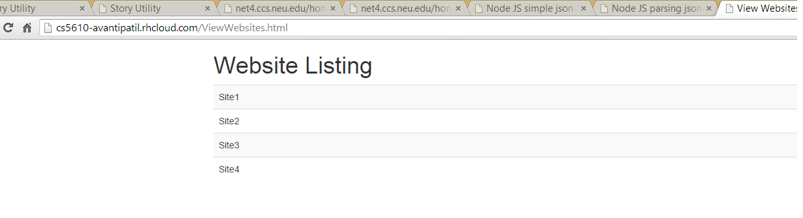

This link shows the output returned in json format
Click Here to see the Output

This Experiment is continuation of Experiment 27
JSON(JavaScript Object Notation) is the open standard format uses human readable text to transmit data object co
nsisting of attribute value pair. It will return ordered list of values . In other laguage you can say them as
lists , vectors , array or sequence .
From rest API JSON responce makes it easy in the receiving end to understand easily.
In this experiment I have hosted static angular JS content in the Open Shift.
Description :
Above code snippet will recive a json response from the server.
res.json will send responce in JSON format.
The above code snippet shows that we can use website.name to check each website individually and
access it's contents
For example : name is key and "Site1" is a answer for the key so when at receiving end and same applies
to other parameters in the above code snippet.